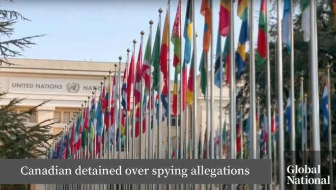
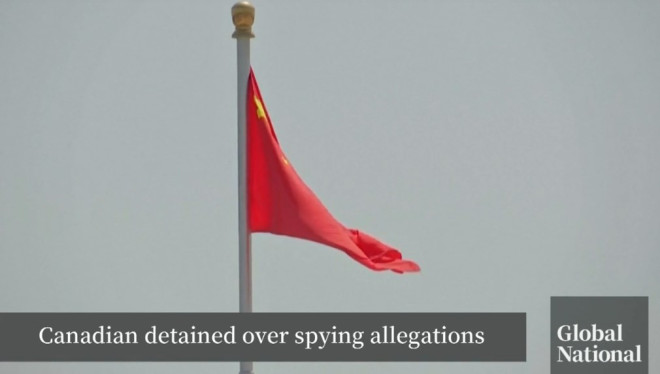

据媒体周四报道，一名前加拿大联合国官员、现任朝鲜问题专家涉嫌为中国从事间谍活动在瑞士被拘留。这一消息来源于德国新闻媒体《明镜》周刊、瑞士媒体公司《Tamedia》和专注于朝鲜新闻的网站《NK News》的联合调查。
瑞士总检察长办公室没有立即回应关于此案的评论请求。Global News已联系加拿大外交事务部，但在发表时未收到回应。
据《NK News》报道，这名嫌疑人在今年春季因间谍指控被捕，之前他经常以环境顾问的身份前往中国工作。由于他尚未被定罪，且有关当局尚未公开对他的指控，媒体未公布这位官员的全名。

报道称，这名五十多岁、居住在日内瓦的嫌疑人已经在审前拘留中度过了几个月，目前瑞士总检察长办公室的调查仍在进行中。
据《NK News》报道，今年早些时候，当Craig突然不再回复消息时，朋友们开始担心他的安危。这位朝鲜问题专家和前联合国官员经常为了环境顾问工作前往中国，有人担心他被北京拘留，另一些人则怀疑他可能出现了健康问题。但他的妻子仅告诉朋友和家人，Craig没事，只是无法联系上。
如今真相揭晓，Craig一直都在瑞士的监狱中。根据《NK News》、德国新闻媒体《明镜》周刊和瑞士媒体公司《Tamedia》的联合调查，瑞士当局在今年春季以涉嫌间谍活动为由，罕见地逮捕了这位五十多岁的加拿大人，怀疑他可能为中国从事间谍活动。
据悉这一调查最早可以追溯到2021年。
Craig现居日内瓦，瑞士总检察长办公室的调查尚未结束，他已经在审前拘留中度过了几个月。由于他尚未被定罪，当局也未公开对他的指控，媒体未公布其全名。
瑞士当局在一次针对中国的监控与反情报行动中首次注意到Craig，并发现他曾与一名疑似中国间谍会面，且似乎接受了现金作为提供情报的报酬。据情报来源称，这些情报包括他多年来与朝鲜外交官建立关系所获取的信息，表明他可能试图利用这些联系和关于朝鲜这个神秘国家的情报牟利。
这次反情报行动反映出瑞士试图根除中国在日内瓦的间谍活动，而逮捕Craig的决定在通常要求间谍悄然离开的瑞士也属罕见。
据瑞士联邦情报局的情报来源称，瑞士情报部门在监控一名伪装成外交官的中国军事情报人员时，首次对Craig产生了兴趣。这名中国女特工在2021年多次与这位加拿大人在日内瓦的高级餐厅会面，瑞士反情报部门观察到两人之间的对话带有明显的阴谋性质。
其中一次对话据称涉及驻瑞士的朝鲜外交官。瑞士情报部门还观察到，这名中国特工向Craig递交了一个信封，里面可能装有现金。据情报来源称，为了避免被发现，Craig和这名中国特工在交谈时压低了声音，并且从不一起离开餐厅。

此后，这名中国军事情报人员已经离开了瑞士。然而，经过这次监控行动，瑞士情报部门将Craig与中国间谍的关系怀疑上报给了瑞士总检察长办公室。
瑞士联邦刑事法院的文件显示，总检察长办公室于2023年3月14日对一名涉嫌为“外国政府”收集“军事、政治和经济”情报的个人展开了调查。这些文件没有透露该个人涉嫌为哪个国家间谍活动，但明确表示，瑞士联邦警察使用了秘密技术设备对该嫌疑人进行了数月的监控。
尽管法院记录中没有提到嫌疑人的名字，但它们表明，瑞士当局在2024年3月14日的一次听证会上通知了这个人遭到秘密监控的事实，这表明该嫌疑人与在文件中提到的加拿大国民Craig可能是同一人。熟悉内情的三位消息人士也向《NK News》证实，Craig今年早些时候在瑞士被捕，但他们没有透露或不清楚其被捕的具体时间和原因。
4月24日的法院文件显示，该间谍案中的嫌疑人“目前被拘留”。据法院记录显示，该嫌疑人在3月曾试图驳回通过秘密监控获得的证据，但瑞士联邦刑事法院驳回了这一请求。
瑞士检察官办公室告诉《NK News》，“不能对可能在刑事诉讼中被指控的个人发表评论。”
加拿大政府在回应《NK News》对Craig案件的询问时确认，他们“知晓一名加拿大人在瑞士被拘留”。加拿大外交事务部发言人表示：“由于隐私考虑，无法透露更多信息。”
Craig的律师Marie-Hélène Jeandin未回应《NK News》及其合作报道伙伴《明镜》周刊和《Tamedia》的置评请求。
中国和朝鲜驻日内瓦大使馆也未对三家媒体的询问作出回应。
巴塞尔大学的韦伯向NK News表示，在处理外国情报问题时“瑞士通常相当保守，希望所谓的间谍悄悄离开该国”。
这位专家表示，他只能推测为什么瑞士人这次采取了不同的做法。他说：如今，间谍案件经常涉及来自合作第三国情报机构的信息，如果获得的信息详细而全面，这也可能带来追查这些案件的期望，甚至是压力。
如果被指控并被判为外国政府收集军事、经济和政治情报，Craig可能面临最高三年的监禁。